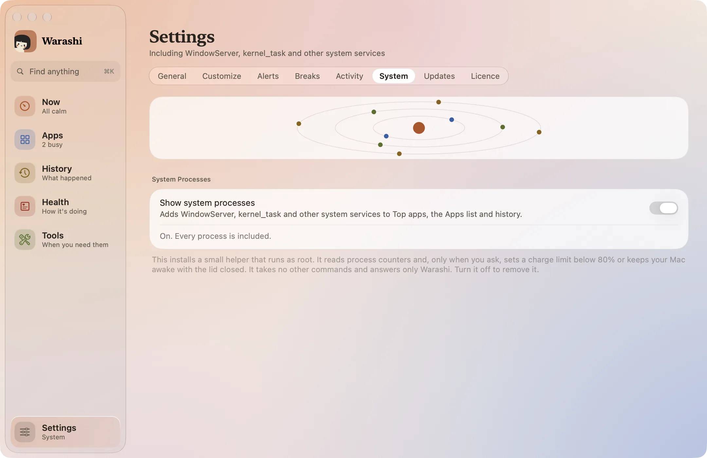
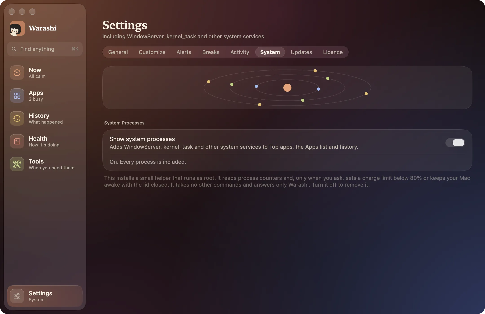

Algumas coisas precisam de um pouco mais de acesso do que um app comum tem. O auxiliar do sistema opcional oferece exatamente três delas, e nada mais:
- Processos do sistema: WindowServer, kernel_task, mds e companhia, em Apps, nos apps mais ativos e no Histórico.
- Limites de carga abaixo de 80% (Bateria e limite de carga).
- Manter o Mac acordado com a tampa fechada (Manter ativo).
- Abra Ajustes › Sistema
Pressione ⌘, e escolha Sistema. O Warashi também oferece Ativar na primeira vez que você escolhe algo que precisa dele.


- Ative Mostrar processos do sistema
O Warashi instala o pequeno auxiliar. Depois, o macOS pede a sua aprovação.
- Aprove nos Ajustes do Sistema
Clique em Abrir Ajustes de Itens de Início no Warashi, ou abra Ajustes do Sistema › Geral › Itens de Início. Em Permitir em Segundo Plano, ative o Warashi. O macOS pode pedir sua senha.
O que o auxiliar pode e não pode fazer
- Ele lê contadores de processos: tempo de CPU, memória, disco e energia.
- Só quando você pede, ele define um nível de carga entre 20% e 75%, que ele mesmo confere, ou mantém seu Mac acordado com a tampa fechada, com uma concessão de três minutos que ele encerra sozinho se o Warashi parar de renová-la.
- Ele não aceita nenhum outro comando, nenhum caminho e nenhum argumento, e só responde ao Warashi (os dois lados conferem a assinatura um do outro).
- Desative a chave para removê-lo.
Se algo não estiver certo
- Ainda sem processos do sistema: confira se o Warashi está ativado em Ajustes do Sistema › Geral › Itens de Início › Permitir em Segundo Plano e depois desative e ative a chave de novo.
Mais em Solução de problemas, ou escreva para adam@warashi.app.